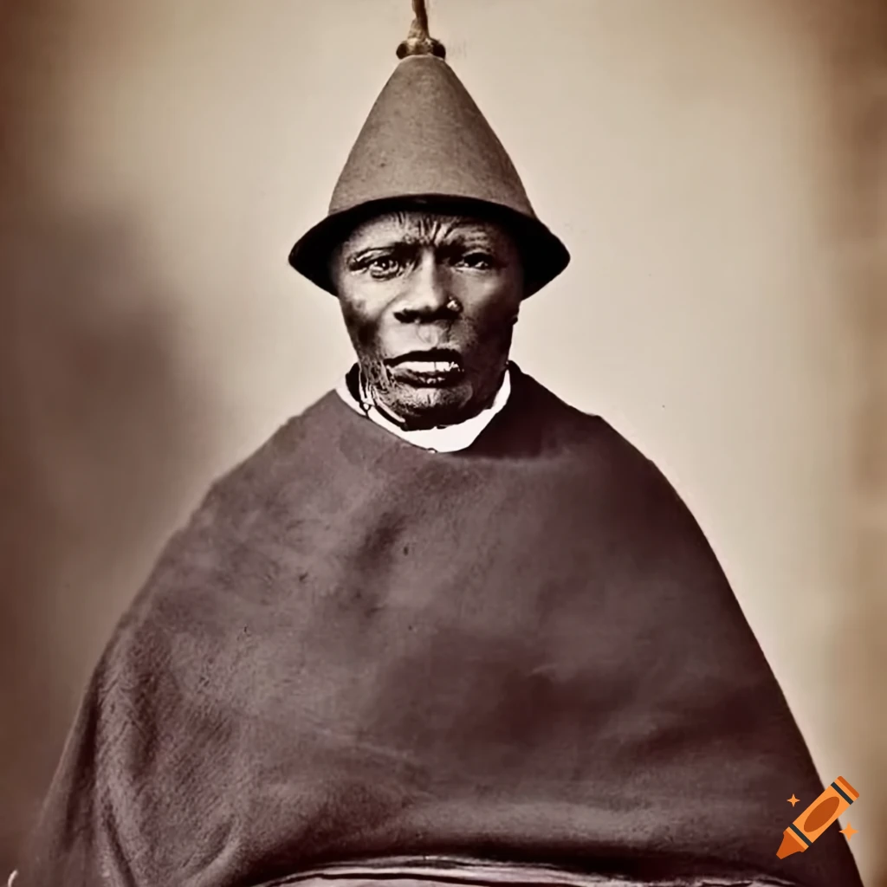

Show Casing Basotho Culture
Welcome to Basotho Cultural Heritage. This website will brief you about Basotho clothes. It will also brief you further about music and dances found in Lesotho.Furthermore, it will brief the reader about crafts and art, the form that can be filled is available at the end of the webpages.
